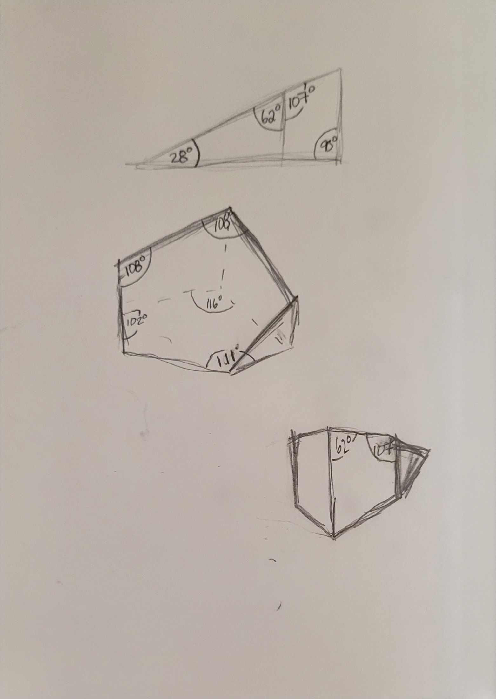
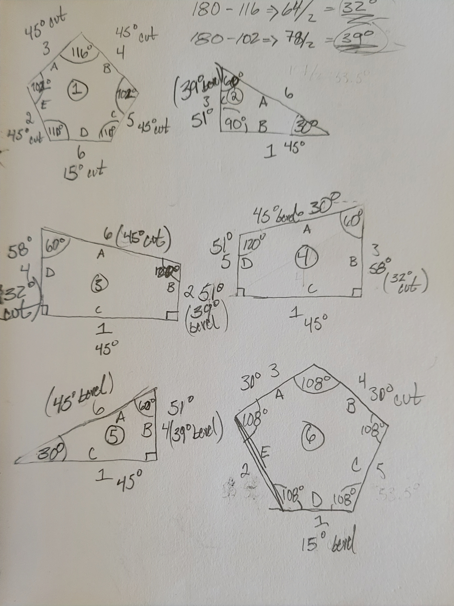
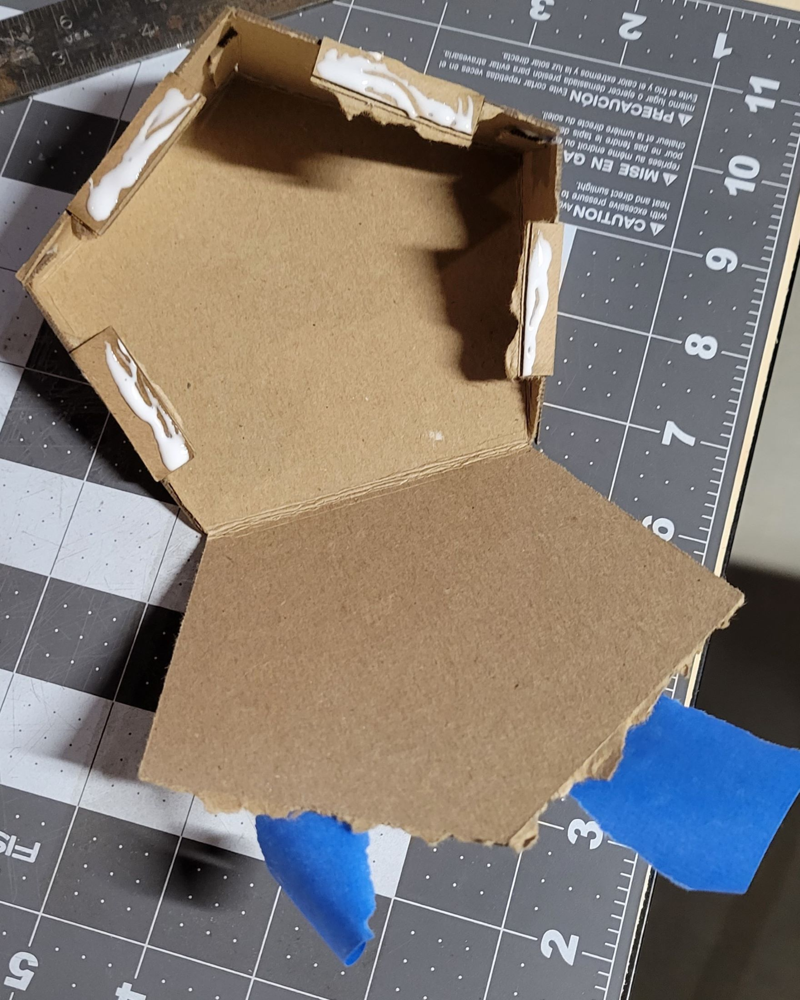
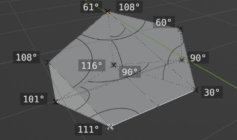

Here is a collection of my documentation for ATLS 3710: Material Studies
and Practice.
A Notable Possession
My favorite possession is a marvelous didgeridoo, hand-crafted by
Adam "CrookedStixz" Henwood of Australia. This object is special due
to the awesomeness in which these instruments are made. Traditional
didgeridoos are made from trees that have been naturally hollowed
out by termites in the Australian outback. After a tree is
harvested, makers clean the trunk of debris and finish it to be a
musical instrument, but the sound and tone of any didg is ultimately
determined by the organic tunnels left behind by the termites.
This musical instrument is made of Bloodwood Eucalyptus timber. The
upper bell of the didgeridoo features an inlaid insignia made of
crushed turquoise stone. The mouthpiece is constructed of natural
dark beeswax.
For this project, I created a convex hexahedra out of wood. This
variation is known as a pentagonal wedge.
My original design was going to be a wild crystalline termination
shape with many articulating faces. I wanted to make the form solid
by beveling the edges of all the face shapes. But as I sat down with
pen and paper to begin drawing the shape dimensions, I quickly
realized the shape was way over complicated and I'd probably give
myself a big headache trying to accomplish it.
So, I landed on my chosen form by scaling back to a regular
heptahedron and slicing a 30° plane through the shape to get my
desired pentagonal wedge form.


After sketching out my shape I used 3D software to model my form. I
then used digital tools to explode the shape into its individual
sides and arrange the shapes onto a plane the same size as our given
lumber.

I then used the software to create a prototype of the shape to test
the fitment of the pieces. I used the prototype to make adjustments
to the dimensions of the shapes to ensure a tight fit.
Using the dimensions of the same pieces in the software I
coordinated vertices of the shapes in relation to two axial edges of
the board. I then used the coordinates to mark out the placement of
the shapes on the physical piece of wood.

After marking out the shapes on the wood, I used the band saw in the
wood shop to cut the pieces out, being sure to leave a bit of excess
to be sanded smooth later on.
After cutting out the pine pieces for test, it was time for the real
deal.
After cutting out the pieces, I used a belt sander to sand the
pieces down to their final shape.
This shape required a few extreme angle beveled cuts, mainly the two
edges that meet at a 30° corner. My original plan was take off
as much as possible with the table saw and then hand plane the bevel
back from there. But I instead decided to take the time to make a
beveling jig from some scrap I had laying around for the table saw.
After beveling the edges, I sanded the faces to remove any remaining
saw marks and used a small block plane to smooth out the bevels.
The fitment wasn't great, but once the pieces were smooth I cleaned
them up of any fibers or dust in preparation of gluing.
After gluing the pieces together, I used rubber bands and an
arrangement of weights to provide pressure in lieu of specialty
clamps.
After the glue dried, I used a hand plane to smooth out the corners
and remove any excess glue.
After smoothing the edges, I used a belt sander to sand the piece
down to its final shape.
It was then onto final sanding and finishing.
I stepped through several grits of sanding, 60, 120, and 220 grit
sandpaper, to achieve a smooth surface for finishing.
After sanding, I applied a flood coat of Danish oil to the surface
using a cloth. Once the oil soaked in, about 15 minutes, I reapplied
oil and wiped clean
After the oil dried overnight, I applied a second coat of danish oil
by wet sanding it into the piece with 400 grit sandpaper.
Once the the second coat had eight hours to dry, I repeated wet
sanding a third coat of danish again with 400.
After the third coat dried, I applied a fourth and final coat of
danish oil by wet sanding it into the piece with 800 grit sandpaper.
Peggasus is a gondola made out of plastics source from my recycling
bin. The gondola is made of a HDPE milk jug, 4 LDPE can rings, 1
PETE egg carton and some LDPE plastic film bags. The gondola is
attached to a plastic bottle cap that is attached to the milk jug
cabin via can rings. The egg carton is slotted through the walls off
the milk jug in order to secure the egg seats. The plastic bags were
added under the seats to add cushioning for any turbulence that may
occur. A front airbag and seat belts have been installed to ensure
safe travel for any egg babies during their voyage on Peggasus!